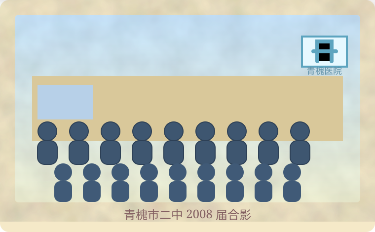
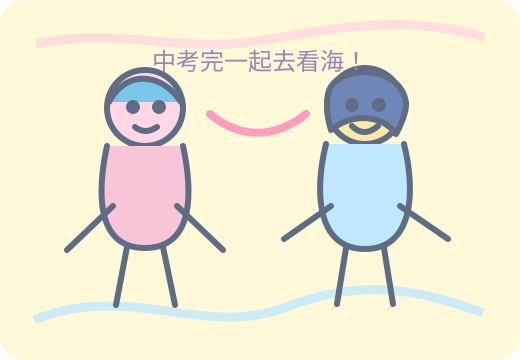
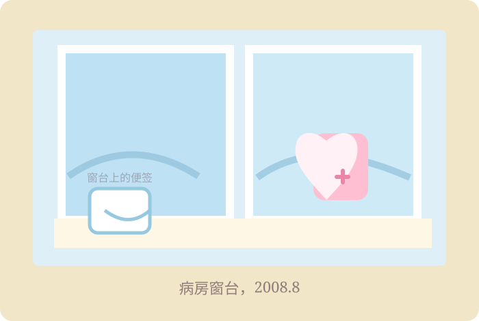
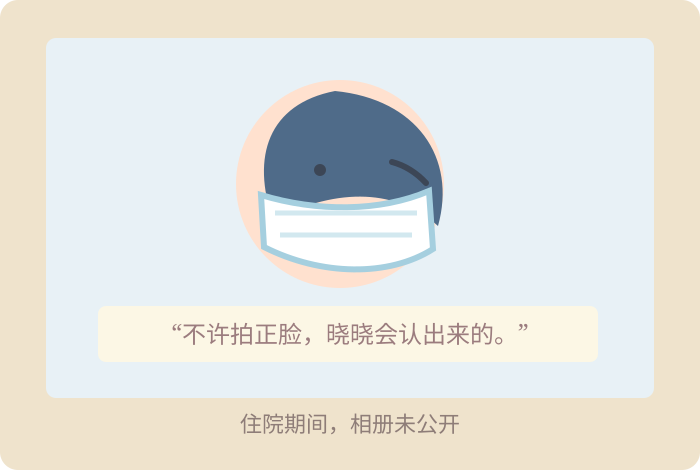
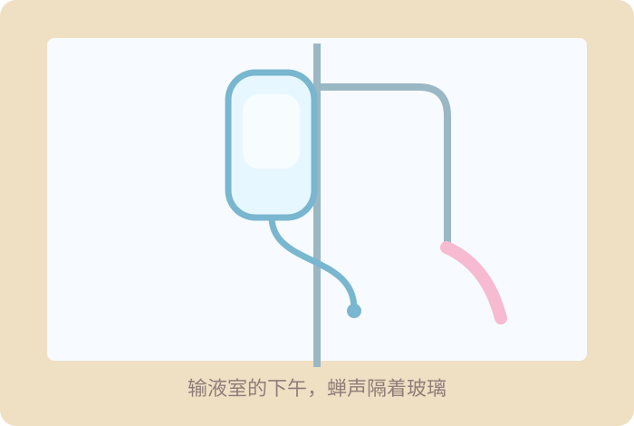
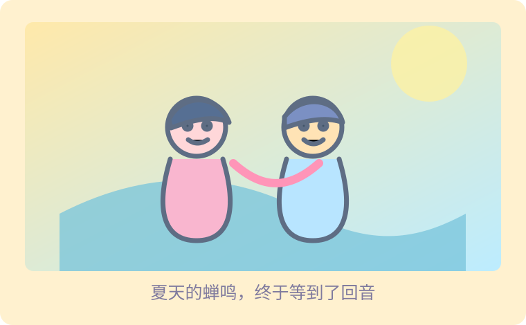

2008.07.28
蝉鸣好吵，但夏天很好
今天和晓晓约好，中考完去看海。她说要买同款贝壳手链，我说我要画一整本海边日记。
2008.07.29 - 2008.08.04
损坏的7天
日记索引从7.28直接跳到8.5。请在左侧日历选中完整缺失区间。
7.29：体育课跑两圈就喘不过气，晓晓笑我暑假前就开始偷懒。
7.31：妈妈说周末去医院复查。只是复查，应该没事吧。
8.02：医生让我先别上网。我把晓晓的留言看了三遍。
8.04：芣想让晓晓潑心，狚湜莪芣嘚芣趉。
把修复出的火星文核心意思概括为关键词：芣想让晓晓潑心，狚湜莪芣嘚芣趉
2008.08.05
对不起
对不起。
这三个字像卡在备份里的小刺。系统暂时无法恢复更多上下文。
根据留言内容，为每条留言选择最合适的未发送草稿。每个回复只使用一次。
晓晓：你怎么又不回我短信！明天讲义借我抄一下嘛。
晓晓：一模要来了，我好烦，我是不是考不上市一中啊 TAT
陈屿：漫展照片传你邮箱了，有一张你们俩超像姐妹。
晓晓：你说中考完看海，还算数吧？
晓晓：你是不是生我气了？至少告诉我你在哪里。
晓晓：你没有第六条回复。我后来才知道，原来有些消息不是不想回。
草稿箱：没发给苏晓的长信
晓晓，我不是搬家，也不是生你的气。医生说我要住院静养，妈妈把电脑线拔了。
我最怕影响你中考。你那么努力，我不能让你每天想着我有没有好一点。
苏晓的博客：找知夏
2008.09.01：开学了。她没来。
2008.09.18：陈屿把毕业照传给我，照片角落怎么会有医院的牌子？

毕业照 / 角落存在可调查信息

公开相册 / 一起去看海班级合照
私密相册 / 请输入密码
病房窗台，2008.8
“不许拍正脸，晓晓会认出来的。”
输液室的下午，蝉声隔着玻璃。
私密日记 / 2008.08 - 2009.06
我没有真的走远
病毒性心肌炎。医生说不能劳累，不能上网。可是晓晓快中考了，我不能让她每天跑医院。
我注册了一个小号，但ID在毕业照的图片备注里。找到它后，用站内搜索进入小号博客。
小号博客：知了不说夏
匿名也可以陪你走一段
2008.08.09：给晓晓留言：历史最后两课一定要背，别问我怎么知道。
2008.11.21：她一模没考好。我打了很多字，最后只发了“你已经很棒了”。
2009.06.18：中考结束。她说想去看海。我今天出院了。
2025.06.12：我把备份提交给抢救计划。麻烦帮我把故事讲完。
点击一个节点，再用上下移动调整顺序。相同月份的节点按语义先后排列。
最终修复页
给苏晓，也给路过这里的人
原来这份备份不是偶然被发现的。2025年，是林知夏自己匿名提交了旧博客。她想知道那段青春有没有人记得，也想知道久别多年后，自己是否还可以说一句“好久不见”。
苏晓也提交了自己的博客备份。两个夏天，在同一个抢救计划里重新遇见。

夏天的蝉鸣，终于等到了回音。
替知夏留下她终于敢说出口的话。结局不会按文字内容评判善恶。